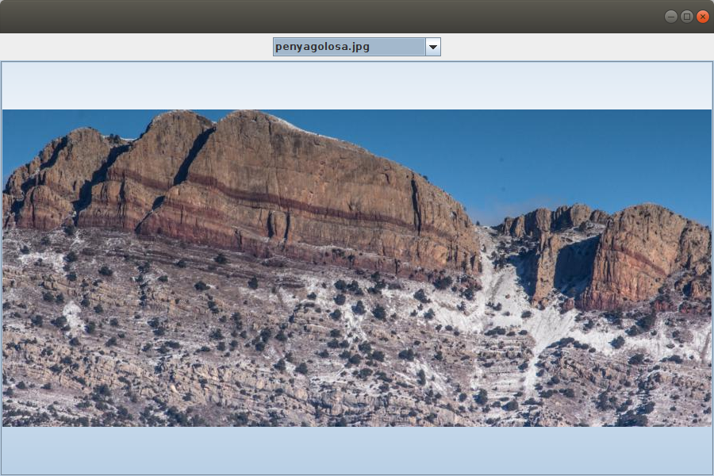

Bases de Dades
5.2.3 CS-IntelliJ: Tot l'exemple
Anem a ajuntar tot l'exemple que visualitza una imatge guardada en Cloud Storage, modificant-lo un poc: ens guardarem els noms de les imatges en un JComboBox. I per a visualitzarla imatge, en compte d'un JLabel utilitzarem un JButton, així la imatge quedara centrada tan horitzontal com verticalment.
El guardarem amb un altre nom, en el fitxer Kotlin Exemple_7_5_2_FirebaseCS_AgafarImatge.kt
import javax.swing.JFrame
import java.awt.EventQueue
import javax.swing.JComboBox
import javax.swing.JLabel
import java.awt.BorderLayout
import javax.swing.JPanel
import java.awt.FlowLayout
import java.io.FileInputStream
import com.google.firebase.FirebaseOptions
import com.google.auth.oauth2.GoogleCredentials
import com.google.firebase.FirebaseApp
import com.google.cloud.storage.Bucket
import com.google.firebase.cloud.StorageClient
import java.nio.file.Paths
import java.awt.image.BufferedImage
import javax.imageio.ImageIO
import java.io.IOException
import java.nio.ByteBuffer
import java.io.ByteArrayInputStream
import javax.swing.ImageIcon
import java.io.File
import javax.swing.JButton
class AgafarImatge_2 : JFrame() {
val nomIm = JComboBox<String>()
val foto = JButton()
var bucket: Bucket? = null
init {
defaultCloseOperation = JFrame.EXIT_ON_CLOSE
setBounds(100, 100, 900, 600)
setLayout(BorderLayout())
val panell1 = JPanel(FlowLayout())
panell1.add(nomIm)
getContentPane().add(panell1, BorderLayout.NORTH)
getContentPane().add(foto, BorderLayout.CENTER)
val serviceAccount = FileInputStream(
"acces-a-dades-6e5a6-firebase-adminsdk-ei7uc-fcf7da56aa.json"
)
val options = FirebaseOptions.Builder()
.setCredentials(GoogleCredentials.fromStream(serviceAccount))
.setStorageBucket("acces-a-dades-6e5a6.appspot.com")
.build()
FirebaseApp.initializeApp(options)
bucket = StorageClient.getInstance().bucket()
val blobs = bucket?.list()
for (b in blobs!!.iterateAll())
nomIm.addItem(b.getName())
nomIm.addActionListener { agafar() }
}
fun agafar() {
// Instruccions per agafar la imatge
val blob = bucket?.get(nomIm.getSelectedItem().toString())
/*
// Primera manera de llegir, amb un fitxer auxiliar
val destFilePath = Paths.get("auxiliar.jpg")
blob?.downloadTo(destFilePath)
val image = ImageIO.read(destFilePath.toFile())
foto.setIcon(ImageIcon(image))
*/
//Segona manera de llegir: muntant un reader per a carregar a un ByteBuffer
val im = ByteBuffer.allocate(1024 * 1024)
blob?.reader()?.read(im)
val image = ImageIO.read(ByteArrayInputStream(im.array()))
foto.setIcon(ImageIcon(image))
}
}
fun main(args: Array<String>) {
EventQueue.invokeLater {
AgafarImatge_2().isVisible = true
}
}I aquest seria el resultat:
